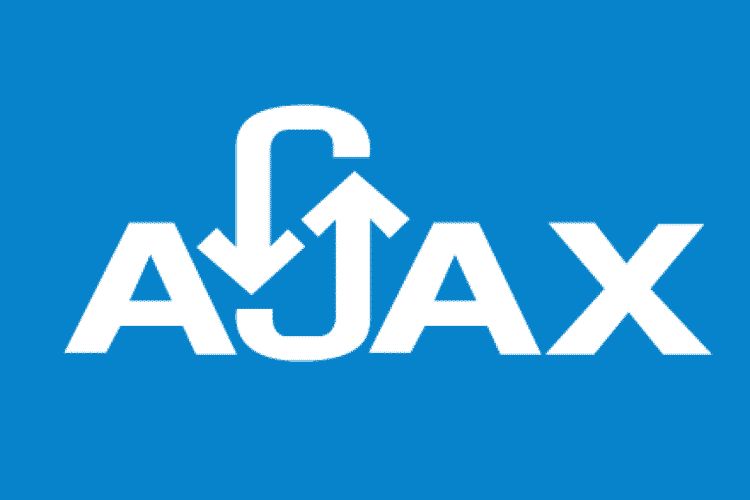
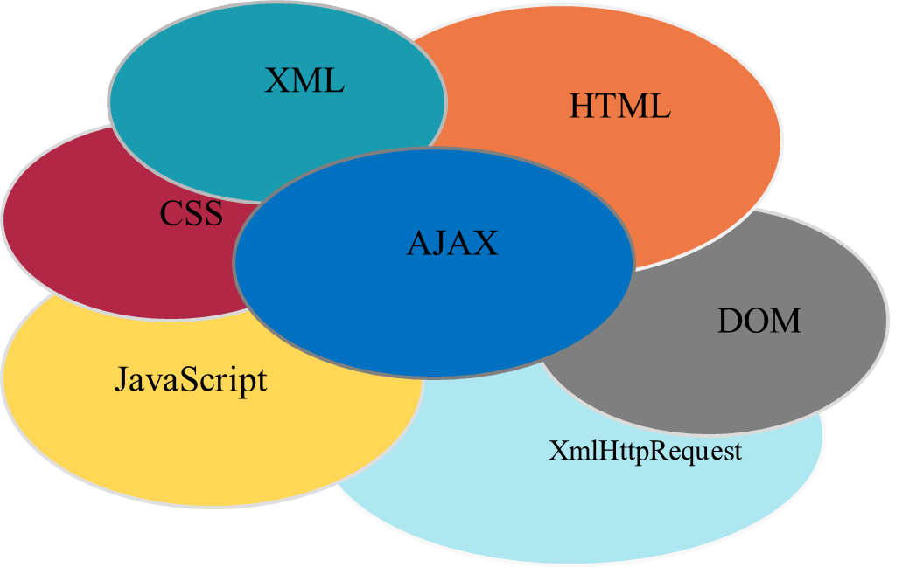
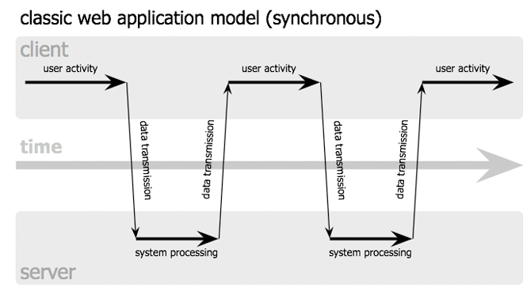
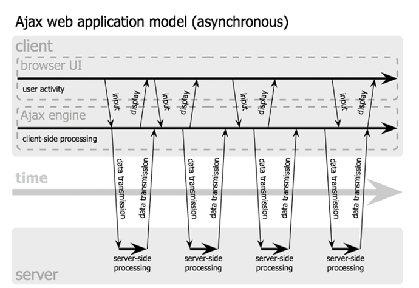
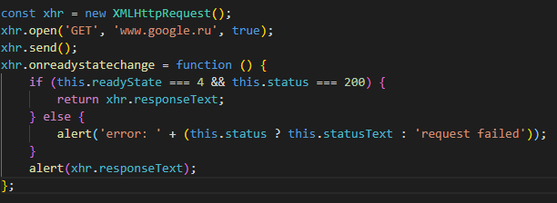

Asynchronous Javascript and XML
Presentation plan
- What is AJAX?
- Story AJAX
- Technology
- Synchronous data exchange model
- Asynchronous data exchange model
- AJAX application
- Why would i recommend you to use AJAX
What is AJAX?
AJAX is a set of web technologies for creating asynchronous web applications.
Story AJAX
- FRAME, IFRAME - IE 3, 1996
- Remote Scripting (Microsoft) - IE 5.5 1998
- AJAX - 2005
- W3C XMLHttpRequest - 2006
Technology

Classic Web Application (synchronous)

Classic Web Application (synchronous)

AJAX Application

The structure of a simple request to the server

Why would i recommend you to use AJAX
- Traffic saving
- Reducing server load
- Accelerate Interface Response
- Increase interactivity
THANKS FOR ATTENTION!